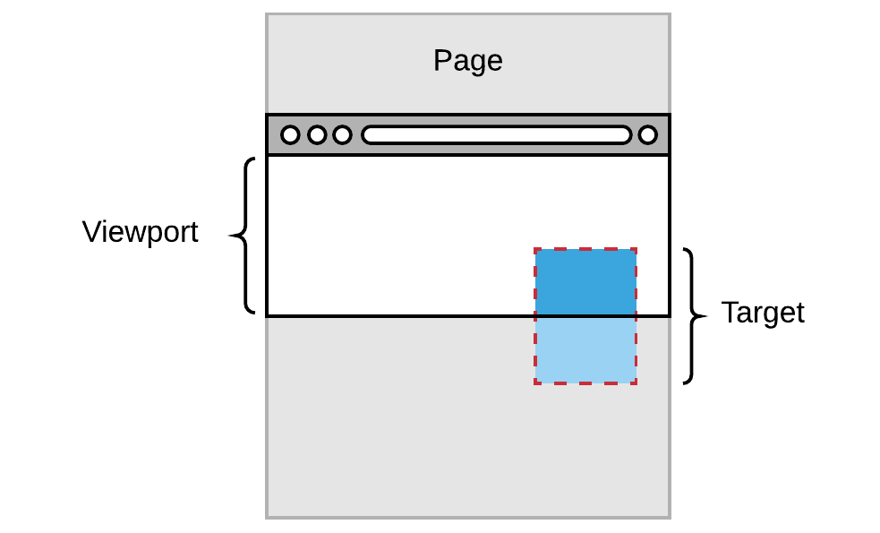
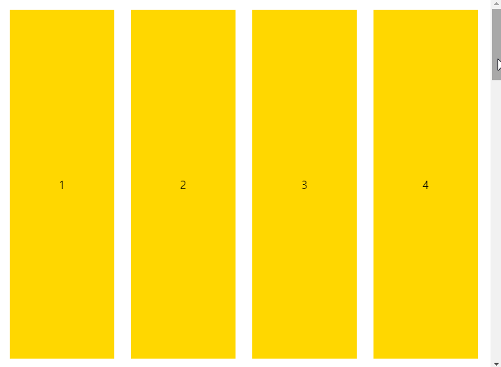
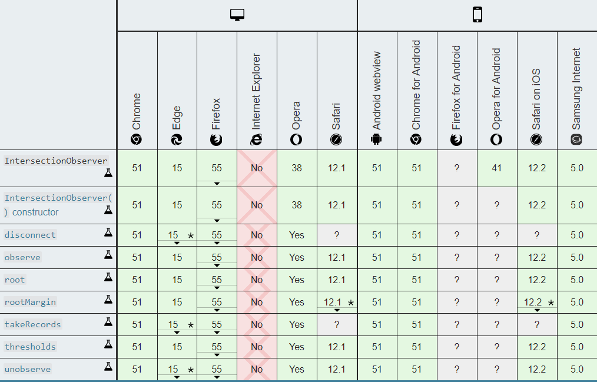

IntersectionObserver API란
IntersectionObserver API는 타겟 엘리멘트가 화면(viewport)에 보여지고 있는지 관찰하는 API입니다.
크롬 51버전부터 사용 가능하며, 현재 대부분의 모던 브라우저에서 지원합니다.
IntersectionObserver 이전엔 화면에 보이는 요소를 감지하려면 Scroll 이벤트를 사용하여 스크롤의 좌표와 화면의 크기를 더해서 관찰하려는 요소의 offset 좌표가 포함되는지를 계산해야 하는 번거로움뿐만 아니라 반복적인 스크롤 연산 처리 과정의 성능 이슈가 따릅니다. 그래서 아래와 같은 상황에 이 API를 활용하는 것을 권장합니다.

어떻게 활용하면 좋을까요?
- Image Lasy loading 구현할 때
- Content Lasy loading 구현할 때
- Infinite scrolling 구현할 때
- 화면에 보이는 요소 에니메이션 처리할 때
주요 API 알아보기
구문
1 | const observer = new IntersectionObserver(callback, options); |
메서드
observe, unobserve, disconnect 메서드를 주로 사용하게 된다.
- observe(targetElement): 타겟 엘리먼트에 대한 관찰을 시작할 때 사용합니다.
- unobserve(targetElement): 타겟 엘리먼트에 대한 관찰을 멈출 때 사용합니다.
- disconnect(): 다수의 엘리먼트를 관찰하고 있을 때, 이에 대한 모든 관찰을 멈추고 싶을 때 사용합니다.
- takeRecords(): 관찰중인 엘리먼트의 IntersectionObserverEntry 객체를 배열로 반환한다.
옵션 속성
옵저버를 조정할 수 있는 옵션 객체로 위 구문의 options에 기입합니다.
지금은 이런 내용이 있다 정도만 알아두고, 자세히 다뤄보고자 할 때 다시 봐도 늦지 않는다.
- root
- 대상 요소 (element) 를 감시할 상위 요소.
- default: null (document가 root로 사용된다)
- rootMargin
- 바깥 여백(Margin)을 이용해 Root 범위를 확장하거나 축소할 수 있습니다.
- default: 0px 0px 0px 0px
- threshold
- 관측 대상이 화면에 어느 정도 노출될때 보인다고 판단할지 비율을 지정할 수 있다. (0.0 ~ 1.0 지정 가능하고, 0.0은 관측 대상이 1픽셀이라도 보이면, 1.0은 요소가 전부 보일때 노출됬다고 판단한다)
- default: 0.0
간단한 예제로 동작 원리 알아보기
화면에 보이는 블럭은 노란 배경색이 차오르고, 블럭이 화면 밖으로 나가면 다시 배경색이 사라지는 예제입니다. (DEMO)

1 | const io = new IntersectionObserver((entries) => { |
사용해보면 생각보다 간단한 인터페이스라 금방 실무에 다양하게 활용하실 수 있습니다.
아래 참고할만한 NPM 모듈이 있으니 복잡하지 않은 UI는 직접 구현해 보는 것을 추천합니다 :)
브라우저 지원 현황
Polyfill을 사용하여 IE와 더 많은 하위 브라우저들도 지원할 수 있습니다.

참고
- IntersectionObserver MDN
- IntersectionObserver Polyfill
- react-intersection-observer
- react-visibility-sensor
- react-in-viewport
작성자

codeJS 🐘
https://github.com/dodortussimple is best